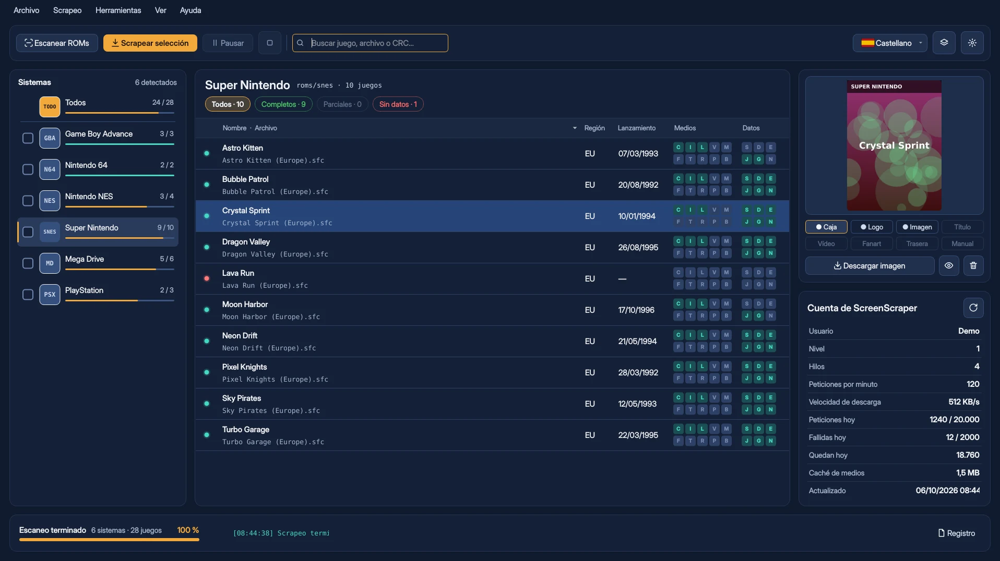

Reconoce tu colección
Detecta los 256 sistemas de Batocera por el nombre de sus carpetas, en tu equipo o en red. Agrupa los juegos de varios discos y aparta las BIOS.
KukoScrapingFree busca cada juego en ScreenScraper, descarga sus datos e imágenes en tu idioma y los deja listos para Batocera. Sin tocar nunca tu carpeta de ROMs.

Sin anuncios, sin suscripciones y sin funciones de pago. Puedes usarlo, copiarlo y compartirlo con quien quieras.
Entonces te han estafado. KukoScrapingFree no se vende nunca. Descárgalo solo desde esta web y reclama tu dinero a quien te lo vendió.
Funciones
Pensado para colecciones grandes y para quien no quiere pelearse con ficheros XML.
Detecta los 256 sistemas de Batocera por el nombre de sus carpetas, en tu equipo o en red. Agrupa los juegos de varios discos y aparta las BIOS.
Calcula la huella de cada ROM (CRC32, MD5 y SHA1) para que ScreenScraper la identifique sin dudas, aunque el fichero tenga un nombre raro.
Tú decides el orden: España, Europa, Mundial… Las carátulas, los nombres y las fechas salen de tu región preferida, y la sinopsis en tu idioma.
Todo se guarda en una carpeta de salida aparte. Al copiarla a Batocera se respetan tus partidas jugadas y tus favoritos.
Un editor visual para diseñar la imagen de cada juego: captura, caja 3D, logo y textos, con capas, guías y deshacer.
Carátula, galería, vídeo integrado y todos sus datos. Edítalos a mano o vuelve a buscarlos comparando lo nuevo con lo que ya tienes.
Encuentra juegos sin ROM, imágenes que faltan y ficheros que nadie usa. Nada se borra: lo que sobra se aparta en una carpeta.
Guarda las versiones anteriores de cada gamelist. Vuelve a cualquiera, o al original de Batocera, con un clic.
Respeta los límites de tu cuenta y te avisa antes de un scrapeo grande si no te va a llegar la cuota del día.
Capturas
Carátula, logo, composición, sinopsis, valoración y todos los datos del juego en una sola pantalla. Si algo no te convence, lo cambias tú.


Diseña la imagen que verás en Batocera colocando capas como en un programa de dibujo. Mira el resultado con tus propios juegos antes de aplicarlo a todo el sistema.
Elige y ordena las regiones de las que quieres las carátulas y los nombres. Si tu región no existe, se usa la siguiente de tu lista.

Ejemplos creados por el programa con la plantilla «Clásica 4:3» (juegos y carátulas de demostración).


Cómo funciona
No se instala nada. Todo lo que guarda el programa se queda dentro de su propia carpeta.
Solo tu usuario y tu contraseña de screenscraper.fr. Se guardan cifrados en tu equipo.
En tu disco o directamente en la red, como \\BATOCERA\share\roms. Un asistente te guía al empezar.
Marca los sistemas, pulsa «Scrapear selección» y, al terminar, copia la carpeta de salida a tu Batocera.
Preguntas frecuentes
Nada. Es freeware: gratuito y de libre distribución, sin anuncios ni funciones de pago.
Sí. La cuenta es gratuita y se crea en screenscraper.fr. El programa respeta los límites de tu cuenta: hilos, peticiones por minuto y cuota diaria.
No. Tu carpeta de ROMs nunca se modifica: el programa trabaja sobre una copia en la carpeta de salida, guarda las versiones anteriores de cada gamelist y no borra nada.
Castellano, inglés, francés, alemán, portugués, ruso e italiano. La sinopsis de los juegos se descarga en el idioma que elijas.
Un ordenador con Windows o Linux y una pantalla de al menos 1280 × 720. Tu Batocera puede estar en la red: no hace falta sacar el disco.
Gratuito · Sin instalación · Para Windows y Linux
Las descargas están en la página de versiones de GitHub. Descárgalo solo desde aquí.
La información, las imágenes y los vídeos de los juegos proceden de ScreenScraper.fr, una gran base de datos creada y mantenida por su comunidad. Gracias por permitir usar su API para dar servicio a este programa. Los datos y las imágenes pertenecen a ScreenScraper y a sus autores.